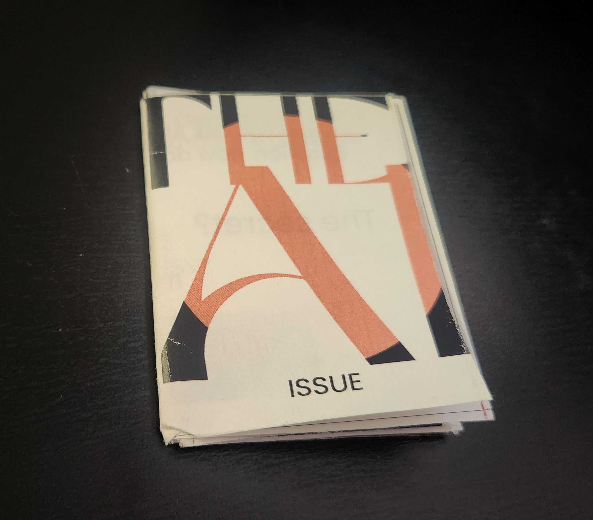
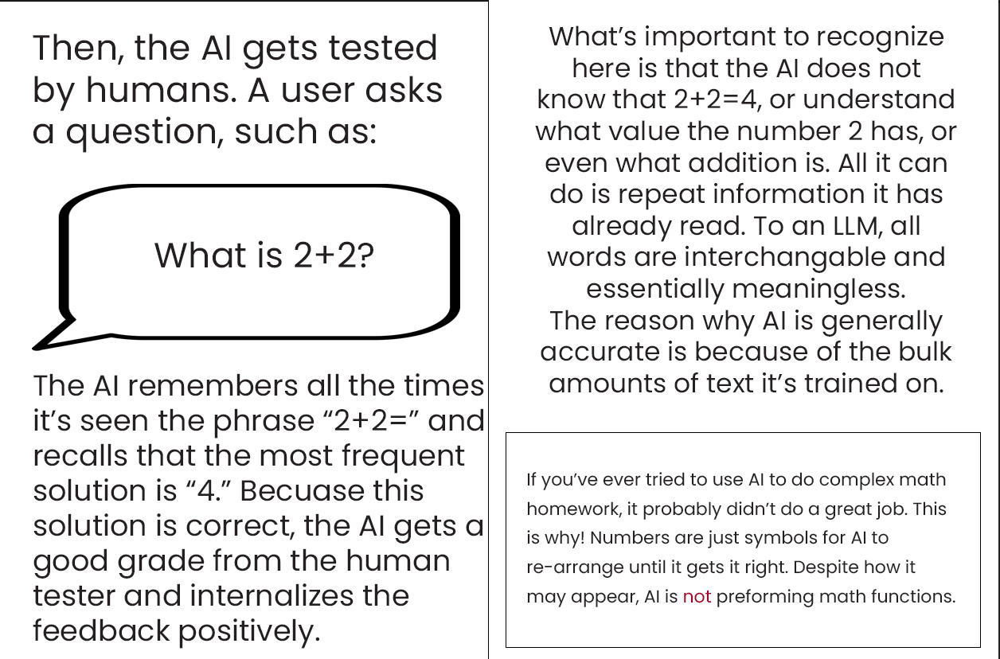

The “AI Issue” Zine
AI is here to stay, and how we frame it now will influence how people interact with it for years to come. Many frustrations stem from a gap between how people expect AI to work, and how it actually does. Bridging that gap requires empathy, in depth technical understanding, and a human centered perspective on how people interpret and use these tools.
Making AI understandable is a UX challenge. Through this project, I explored how clear language and thoughtful design help people understand this technology, recognize its limitations, and make more informed decisions about using it.
The “AI Issue” is a research-driven zine exploring how AI works, sycophancy, and environmental impact. I used language, imagery, and editorial design to make a complicated conversation more approachable.

- Project
- An evocative design response to course content surrounding AI
- My role
- AI Researcher, UX copy writer & Graphic designer
- Context
- Special Topics- AI Use in Graphic Design
01 / Curiosity & challenge
An invitation to question AI.
How do you encourage critical thinking without making the reader feel judged?
The starting point
I grew up experimenting with Cleverbot and Façade, and watching what happened to bots like Tay (RIP). My interest was always as much about people as the technology.
The design challenge
For Zach Kaiser’s Special Topics- AI Use in Graphic Design course, I wanted to reach beyond people who already shared my perspective. A physical zine offered a way to invite reflection through language, layout, and imagery, without shaming readers for using AI.
02 / Research & writing
Simplify. Reconsider. Refine.
I drew from course readings and outside research, narrowing the content to how AI works, sycophancy, and environmental impact. Katie Singer’s straightforward writing was a major influence.
Every new point sent me back through the copy: was it accurate, understandable, and fair to the reader?
- Keep the important information.
- Acknowledge ecological, economic, and social harms.
- Give readers room to form their own questions.


03 / Visual direction
The invitation is in the design.
Traditional zine aesthetics might appeal mainly to an existing zine audience. I chose sleek, AI-inspired editorial visuals to catch the attention of people outside that circle.
The AI “Issue” plays on the language of magazines. Its familiar visual style also pokes fun at the sameness of AI-driven web design.
Behind the design
Explore the research and thinking behind the zine in the accompanying presentation.
04 / What I learned
How you say it shapes what people hear.
This project deepened my understanding of AI, but my biggest learning was about people. Their understanding of a technology shapes how they use it and respond to its impacts.
I learned to treat tone and visual design as part of communicating responsibly. Making information clear also means considering whether the reader feels invited to engage with it.